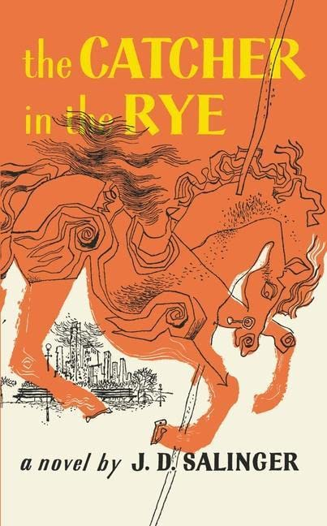

The Catcher in the Rye

Title:
The Catcher in the RyeAuthor:
J. D. SalingerISBN#:
978-7543321724Genre:
OtherRating:
3.5Formats:
Hardcover, Paperback, PDFDescription:
The Catcher in the Rye, novel by J.D. Salinger published in 1951. The novel details two days in the life of 16-year-old Holden Caulfield after he has been expelled from prep school. Confused and disillusioned, Holden searches for truth and rails against the “phoniness” of the adult world.